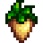
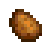
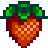
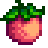
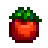
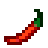
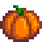
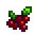
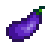
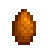

Farmaření a roční období
Rok ve Stardew Valley má čtyři roční období a každé z nich trvá 28 dní. Většina plodin roste jen v jednom z nich a hned první den nové sezóny uschne, proto je dobré si dopředu naplánovat, co a kdy zasadit.
Ceny jsou ve zlaťácích (g) a prodejní cena platí pro plodinu běžné kvality. „Opakovaná sklizeň“ znamená, že rostlina po první sklizni plodí dál a nemusíte ji sázet znovu.
Jaro
Jaro je ideální na rozjezd. Pastinák roste rychle a semínka dostanete hned první den, takže můžete začít okamžitě.
| Plodina | Růst | Opakovaná sklizeň | Semínka | Prodej |
|---|---|---|---|---|
 Pastinák |
4 dny | ne | 20 g | 35 g |
 Brambora |
6 dní | ne | 50 g | 80 g |
| 12 dní | ne | 80 g | 175 g | |
 Jahoda |
8 dní | každé 4 dny | 100 g | 120 g |
Léto
V létě se nejvíc vyplatí plodiny, které plodí opakovaně, a z nich hlavně borůvky.
| Plodina | Růst | Opakovaná sklizeň | Semínka | Prodej |
|---|---|---|---|---|
| 13 dní | každé 4 dny | 80 g | 50 g | |
 Meloun |
12 dní | ne | 80 g | 250 g |
 Rajče |
11 dní | každé 4 dny | 50 g | 60 g |
 Pálivá paprika |
5 dní | každé 3 dny | 40 g | 40 g |
Podzim
Podzim je hlavně o dýních a brusinkách. Dýně se navíc hodí jako dárek pro Abigail, která je má moc ráda.
| Plodina | Růst | Opakovaná sklizeň | Semínka | Prodej |
|---|---|---|---|---|
 Dýně |
13 dní | ne | 100 g | 320 g |
 Brusinky |
7 dní | každých 5 dní | 240 g | 75 g |
 Lilek |
5 dní | každých 5 dní | 20 g | 60 g |
 Batát |
10 dní | ne | 60 g | 160 g |
Zima
V zimě venku běžné plodiny nerostou. Jedinou výjimkou jsou zimní semínka, která si vyrobíte z nasbíraných zimních plodů. Vyrostou za 7 dní a dají vám náhodnou zimní plodinu.
Zimu je proto lepší využít jinak, třeba na doly, rybaření, budování vztahů s vesničany a přípravu farmy na jaro. Pokud už máte opravený skleník, můžete v něm pěstovat cokoliv po celý rok.